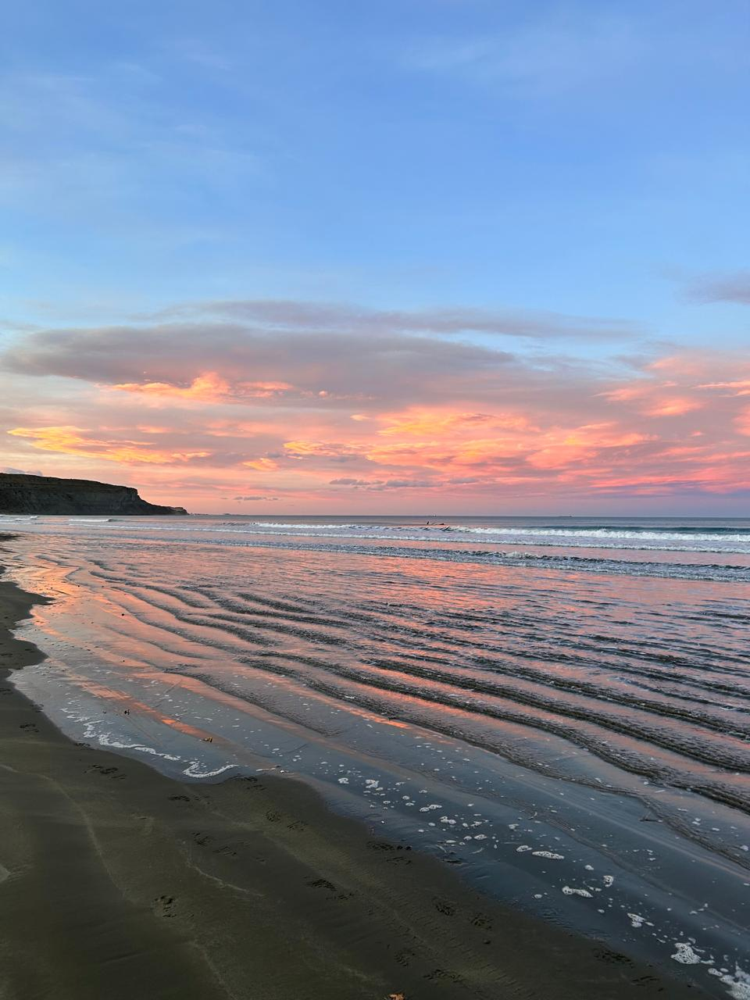

Al sur de la provincia de Chubut
Más al sur que lo que los porteños llaman el sur, sobre la costa, se esconde una playa hermosa. Tiene los atardeceres más lindos, con tonos naranjas gracias a los fuertes vientos de la zona.
Instagram
Descubrila!
A 15 km de Comodoro Rivadavia, se encuentra Rada Tilly. Es una ciudad costera que integra el Golfo San Jorge. Comenzó siendo la ciudad satélite de Comodoro, donde las personas pasaban el fin de semana, pero poco a poco se fue expandiendo hasta conformarse como municipalidad. Su pequeña playa es el principal atractivo de los pocos turistas que llegan allí. Al sur de Rada Tilly se encuentra la Reserva Natural Punta del Marqués, un mirador sobre un cerro, el cual delimita la ciudad. Es un atractivo para los turistas, pero también un espacio que frecuentan quienes conocen la zona.
Por qué el cielo se pone naranja cuando habrá viento?
Durante el atardecer y el amanecer
La aparición de colores naranjas y rojizos en el cielo, significan la llegada de cambios rotundos en el clima. En la zona costera de la patagonia, el viento es el principal indicador. Las ráfagas más altas llegan a los 120km /h. Probablemente, el clima sea uno de los principales factores por los cuales los turistas no llegan a esta zona.
